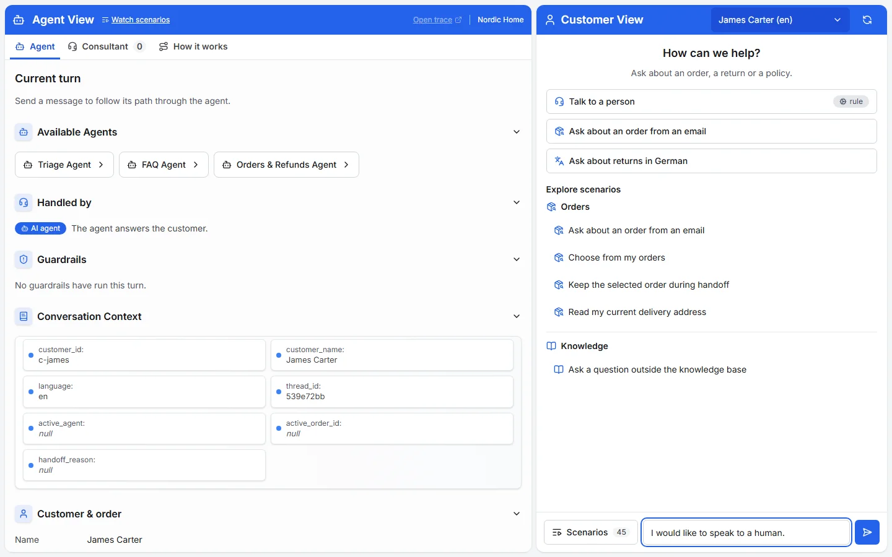

A customer-support AI agent that knows when to hand over to a human
Three agents on the OpenAI Agents SDK answer from your policies, check orders and start refunds. Rules in code decide what the AI may never do alone. Pick a scenario below and watch a recorded run step by step. To try it live, use your own OpenAI key.
Watch three support agents handle orders, refunds and human handoffs. Choose a recorded scenario below, or try the live demo with your own OpenAI key.
Recorded scenarios
Loading the scenario gallery…

Why it matters
Focus the player; use ← / → for steps and Space to play or pause.
Try it live
The live demo runs on your own OpenAI key. Model usage is billed to your account.
2. Open the demo
Paste it into “Your OpenAI key” at the top of the chat. It stays in your browser tab and is sent to the demo server only for your requests.
3. Run a scenario
Click “Scenarios” next to the message box and pick one, or type your own question. The Agent View panel explains each step.
Want an assistant like this for your business?
I build support agents fitted to your products, policies and helpdesk — with human approval where money or data is at stake, and tests that prove it behaves. Tell me what your team answers every day.